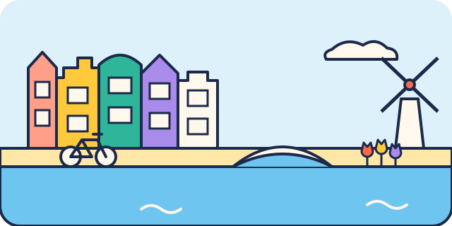

Avec des adolescents, laissez-les choisir une activité par jour et gardez du temps libre en fin de journée. Pensez à réserver à l'avance : Maison d'Anne Frank, Rijksmuseum.

10–17 ans
Maison d'Anne Frank
Environ 1 h 15 · Centre et canaux
CouvertRéserverPorte-bébé conseillé
La cachette où Anne Frank a écrit son journal pendant la guerre. Conseillée à partir de 10 ans, à préparer en famille. Billets uniquement en ligne. Escaliers raides, pas de poussette.
Porte-bébé conseillé · peu ou pas de pavés signalés autour · 2 escaliers recensés à moins de 250 m, souvent contournables · station la plus proche : Rokin, à 780 m, accès sans marche signalé
Photo : Eric de Redelijkheid · CC BY-SA 2.06–17 ans
Micropia
Environ 1 h 15 · Plantage et Oosterdok
CouvertPoussette OK
Le musée des microbes, à côté d'ARTIS : microscopes géants et expériences, très apprécié des enfants curieux.
Plantage Kerklaan 38, 1018 CZ Amsterdam Tram 14, arrêt Artis
Facile en poussette · peu ou pas de pavés signalés autour · 4 escaliers recensés à moins de 250 m, souvent contournables · station la plus proche : Waterlooplein, à 690 m, accessibilité non renseignée
Gratuit pour les moins de 18 ans, sur créneau. Avec des enfants, filez voir La Ronde de nuit de Rembrandt et les maquettes de bateaux.
Museumstraat 1, 1071 XX Amsterdam Tram 2 ou 12, arrêt Rijksmuseum
Facile en poussette · beaucoup de rues pavées autour · beaucoup d'escaliers dans le quartier (17 recensés à moins de 250 m) · station la plus proche : Vijzelgracht, à 420 m, accès sans marche signalé · 3 ascenseurs publics signalés à moins de 400 m
Une terrasse panoramique tout en haut d'une tour, avec une balançoire au-dessus du vide (payante, conditions d'âge ou de taille à vérifier). Le trajet en ferry gratuit fait partie de l'aventure.
Overhoeksplein 5, 1031 KS Amsterdam Ferry gratuit derrière la gare centrale, arrêt Buiksloterweg
Facile en poussette · peu ou pas de pavés signalés autour · beaucoup d'escaliers dans le quartier (18 recensés à moins de 250 m) · station la plus proche : Centraal Station, à 560 m, accès sans marche signalé
Fiches vérifiées le 29 octobre 2026. Services issus d'OpenStreetMap, non vérifiés sur place. Horaires, tarifs et conditions d'accès changent souvent : vérifiez toujours sur le site officiel avant de partir.